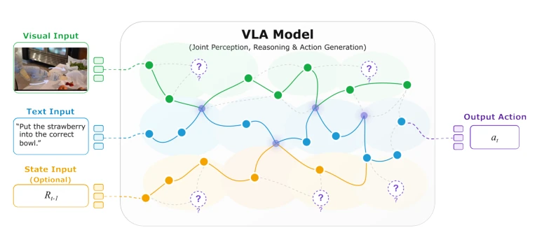
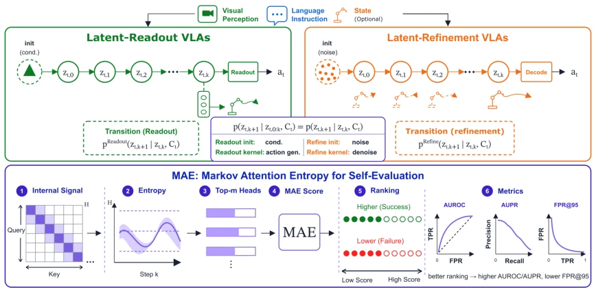
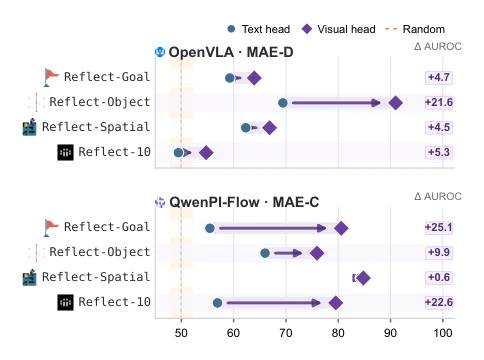
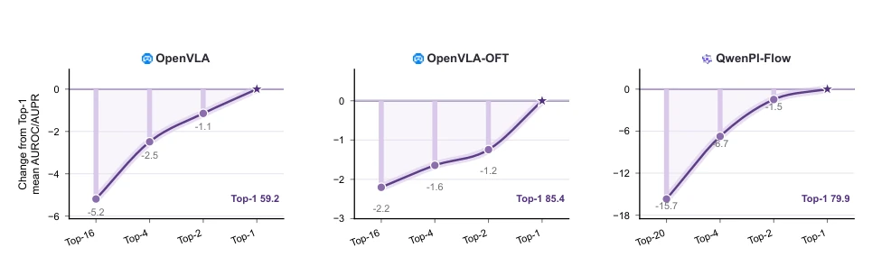
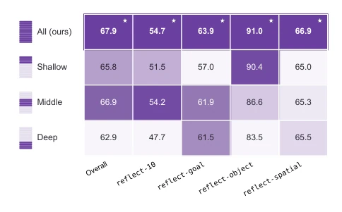
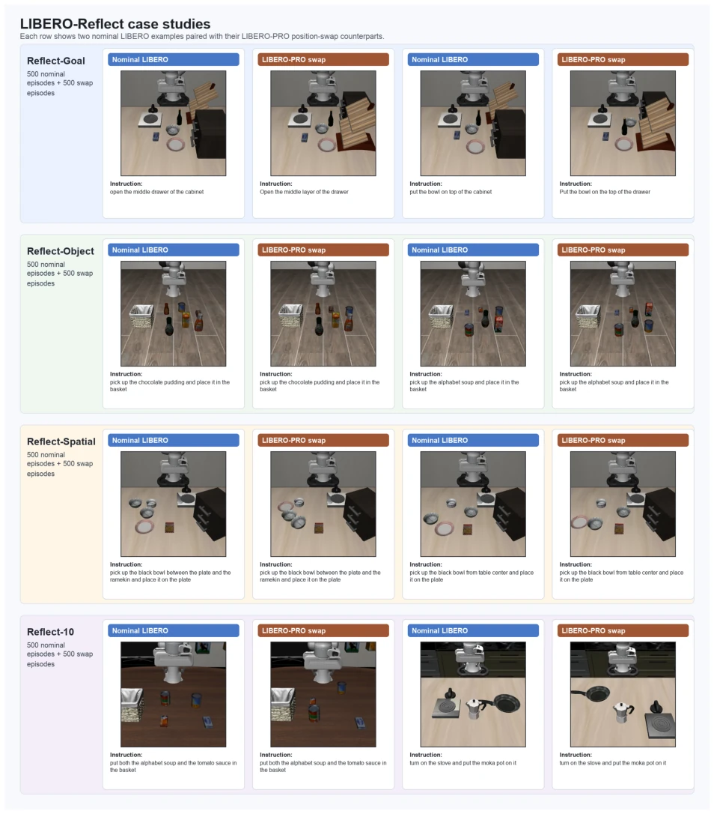
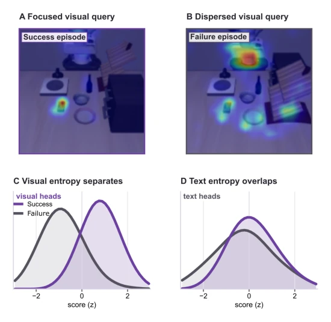
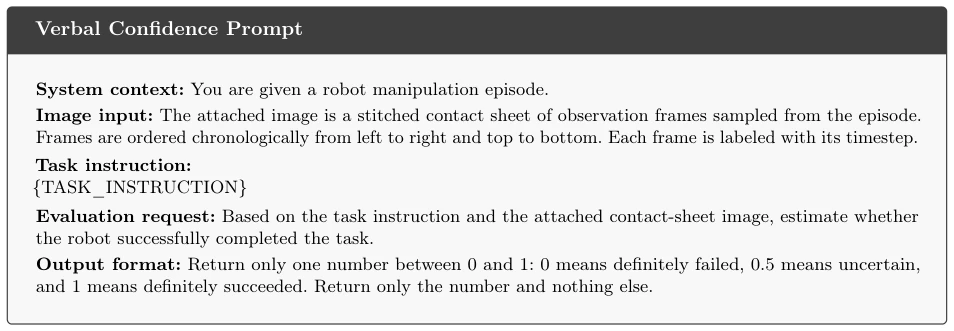

This paper attempts to enable VLA models to "self-reflect", judging action reliability without external judges. The core is forcibly unifying various VLA architectures (such as OpenVLA and the PI series) into conditional generative Markov chains, then focusing on attention entropy. The highlight is indeed unifying evaluation standards across different architectures, without relying on expert labeling or extra models as before, scoring higher than black-box and white-box baselines on LIBERO-Reflect. But there are many drawbacks: the so-called "Markov" is more theoretical packaging, and it is doubtful whether actual attention entropy can truly capture all failure modes, after all, dispersed visual attention is not necessarily wrong, and concentrated is not necessarily right. Moreover, it is only validated in the simulation environment LIBERO, and the generalization to real robots is unknown. The name "FabriMAE" sounds quite impressive, but it is actually just an attention entropy calculator, do not expect it to solve all hallucination problems, especially when the environment changes dynamically, static attention entropy may fail. However, for reliability ranking of homogeneous architectures, this method is indeed more effective than simply looking at output probabilities, counting as adding an "internal monitor" to VLA credibility assessment.
VLA models can convert vision and language into actions, but how to know if the generated actions will fail is a major problem. Existing methods are divided into two camps: one relies on external supervision, such as using expert labeling or auxiliary models to detect failures [12, 36, 29, 26, 10, 31, 7], but this increases deployment costs, is easily affected by annotation bias, and cannot see internal states. The other camp relies on internal self-assessment, black-box methods look at output statistics (such as multi-sampling inconsistency) [2, 21, 42], white-box methods look at softmax or activations in LLMs [2, 38, 16, 32]. But VLA architectures are too diverse, some use discrete readout, some use flow refinement, existing internal signals cannot be uniformly converted. For example, OpenVLA has token probabilities, PI series are continuous actions, cannot be directly compared. The core problem the authors want to solve is: without relying on external supervision, can internal signals be converted into cross-architecture reliability metrics using a unified framework?

Figure 1 From multimodal conditioning to action generation in VLAs. We view VLA action generation as a conditional generative Markov chain: visual observations, language instructions, and state input jointly condition a sequence of latent action states that evolves toward final action. Attention exposes how these latent states route information across modalities, and its entropy serves as a white-box signal for self-evaluating action-generation reliability.
The overall process models the VLA action generation process as a conditional generative Markov chain. Inputs are vision, language, state, middle is implicit action state sequence, finally executed action. The innovation lies in viewing the "state transition kernels" of different architectures uniformly. The specific method is calculating the visual attention entropy at the last step (K steps). For Latent-Readout architectures (such as OpenVLA), reliable actions should have concentrated visual attention, using MAE-D (negative entropy); For Latent-Refinement architectures (such as QwenPI-Flow), reliable actions should maintain broader visual coverage at the final refinement step, using MAE-C (positive entropy). This unifies the attention distribution differences of different architectures into reliability scores. Finally, FabriMAE is proposed, using multiple sampling candidates during testing, selecting the one with the highest MAE score to execute, without needing a verifier. The paper first formally defines the action generation process as a conditional generative Markov chain, where implicit action state $z_{t,k}$ evolves under conditional context $C_t$. Transition kernel $P_ heta$ captures architecture differences, whether autoregressive discrete readout or flow refinement, are all viewed as state transitions. MAE module directly reads the attention matrix at final step $K$, calculating normalized attention distribution entropy for visual modality. Formula (4) defines visual attention entropy $H_v$, measuring the degree of accessing visual perception when action state updates. To adapt to different architectures, the authors designed two directions: MAE-D targets discrete readout, believing high reliability corresponds to low entropy (concentrated attention); MAE-C targets flow refinement, believing high reliability corresponds to high entropy (retaining visual coverage). Final score is obtained by aggregating Top-m head entropy values. FabriMAE then uses this score for branching sampling during inference, sharing prefix then independently refining candidates, selecting the highest score, achieving action selection without external verifier.

Figure 3 Unified Conditional Generative Markov Chain view of heterogeneous VLAs. Visual observations, language instructions, and state input form the conditioning context, while latent action states evolve through architecture- specific transition kernels before the executable action is produced. MAE reads attention entropy from this internal transition process and converts it into architecture-aware self-evaluation scores.
Experiments are conducted on LIBERO-Reflect, containing 2000 standard + 2000 challenge rounds, covering four capability subsets. Baselines include black-box Random, Verbal Confidence, Self-Consistency, and white-box MaxProb, Perplexity, Entropy. Evaluation metrics are AUROC, AUPR, and FPR@95. Results show MAE outperforms baselines on all models and subsets, OpenVLA-OFT AUROC improved 90.1% on Object Binding, FPR@95 reduced 70.5%. Ablation shows visual head signals better than text head, Top-1 head selection most robust, full layer aggregation effect best. FabriMAE on LIBERO-Plus through 70% branching ratio and 0.15 noise scale, improved PI0.5 policy success rate from 85.70% to 86.80%, and runtime increase only 7.20%. Additionally, efficiency analysis shows MAE computation overhead less than 0.1x, excellent Pareto frontier performance, proving its effectiveness as a lightweight evaluation tool.

Figure 5 Text-head versus visual-head self-evaluation signals. OpenVLA uses MAE-D and QwenPI-Flow uses MAE-C. Each connector reports ∆AUROC = V - T. Positive gaps across all subsets indicate that text-side entropy is not a stable substitute for visual information.

Figure 6 Top-m head selection ablation. Panels order selected-head settings from many heads to Top-1 and use independent y-axis scales. Values are percentage-point changes from the Top-1 ranking score, computed as the mean of AUROC and AUPR over the four LIBERO-Reflect subsets. Exact values are reported in Appendix D.

Figure 7 Layer-band ablation for MAE-D with Top-1. Cells report absolute AUROC; colors are normalized within each column by closeness to the all-layer result, stars mark the best layer band, and the left schematic indicates the layer region used by each row.

Figure 8 Case studies from the LIBERO-Reflect construction. Each row corresponds to one subset and shows representative standard episodes paired with challenging episodes. The instruction is printed below each panel, yielding 16 data points across the four subsets.
其他图片Other Figures

Figure 2 Attention entropy as an internal self-evaluation signal. Panels A–B show a successful visual query concentrated on the task-relevant object and a failed visual query dispersed across distractor regions. Panels C–D compare oriented episode-level score distributions from visual and text attention entropy on the same Reflect-Goal episodes. Visual entropy yields a much clearer separation between successful and failed episodes than text entropy, supporting visual attention entropy as the action-relevant self-evaluation signal.

Figure 9 Prompt used for the Verbal Confidence baseline. The stitched contact sheet is provided as an image input in the same multimodal API request.